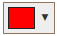
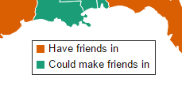

Blogs on Blogs on Maps on Maps.
Late one night my friend messaged me on Skype asking how she could make a map of the United States with two categories. If I were in need of this I would have fired up QGIS. Within 20 minutes I would have imported a shapefile and categorized the states. 45 minutes after that I would have pasted screenshots into Photoshop, meticulously placed Alaska and Hawaii where I felt they should go and spent way too much time fussing with the legend. I would finally decide to leave well enough alone and move on with my life.
That was too much work for such a simple task.
I searched a bit for an online solution. There were numerous available but they all had one thing in common: a fatal flaw. The fatal flaw for one was it used the Mercator projection, another used the Lambert Conformal Conic but the state lines were far too detailed, another actually showed vomit on the screen and called it a "legend".
She wound up using the Mercator one. Her grad school didn't kick her out because of it. She moved on with her life.
Over the next few years, when I would begin to feel underwhelmed with my day job I would come home and work on this solution. The first route I went down was from square one. I wanted to be able to render the map on an HTML5 canvas. I wrote a c# application to take a shapefile and condense the points into a polygon which could be drawn on the canvas without too much detail. Here is what central California looked like:
My attention was shifted elsewhere, I moved, started a new job and heard about d3.js. Since I now know about d3, I never bothered revisiting the previous project. Here is what brought MapsOnMaps to where it is today.
With a little bit of work I was able to have the census.gov state boundary shapefileconverted to geojson and displaying on the screen. But this required the extent to be huge in order to display Alaska and Hawaii.
Initially I thought I was going to need to do some serious shapefile hacking in QGIS to get Alaska and Hawaii to display below the southwestern states. Life became much easier after I read this article on Medium by Amy Rudolph.
The article guided me to a revelation... in D3 you can manipulate geographic objects. Each state is its own geographic object. You can manipulate these as desired. You can change the scale, rotation and position of them until they are displayed right where you want them! Pretty slick.Bind stateClicked function to each state object:
svg.selectAll(".state-path")
.append("path")
.attr("d", path)
.attr("class", "category0Class")
.style("stroke-width", "1")
.style("stroke", "white")
.on('click', stateClicked);function stateClicked(d){
var nextClass = d3.select(this).attr('class') == SelectedClass ? 'category0Class' : SelectedClass;
d3.select(this).attr('class', nextClass);
}The stateClicked function will toggle between the selected class and the default class. This comparison is more hard coded than I'd like it to be. Can't wait for the refactor!
The requirements I came up with specifically for each category are:
All of these are accomplished with one exception: you cannot delete the default category because of limitations set forth in the stateClicked function above. We always need to have a 'category0Class'. It works, but that will sure feel good to refactor. The color selector utilizes github user bgrins' spectrum color selector. The only modification here was to the css override to make the color fit in a bit better than the default.
The majority of the work on this section was tweaking CSS on the buttons to signify which color was selected, that you could select another category and that you can delete any category sans the default.
As you type your title in, it displays itself centered above the map. No title? No problem. If you don't want a title on your map, the blank space does not throw the map balance off!
This was my favorite part to work on. As a category is added or changed it will draw a rectangle. The height determined by the amount of the categories. The width is the interesting part. It is calculated using the svg getComputedTextLength function. I went down a few hopeless paths before finding that little gem. The next exciting thing about this was making it a draggable element. This was accomplished using jQueryUI's draggable functionality. What it does is alleviate many frustrating hours map makers have spent putting the final touches on their maps by exporting to Photoshop to put the finishing touches on the legend.
